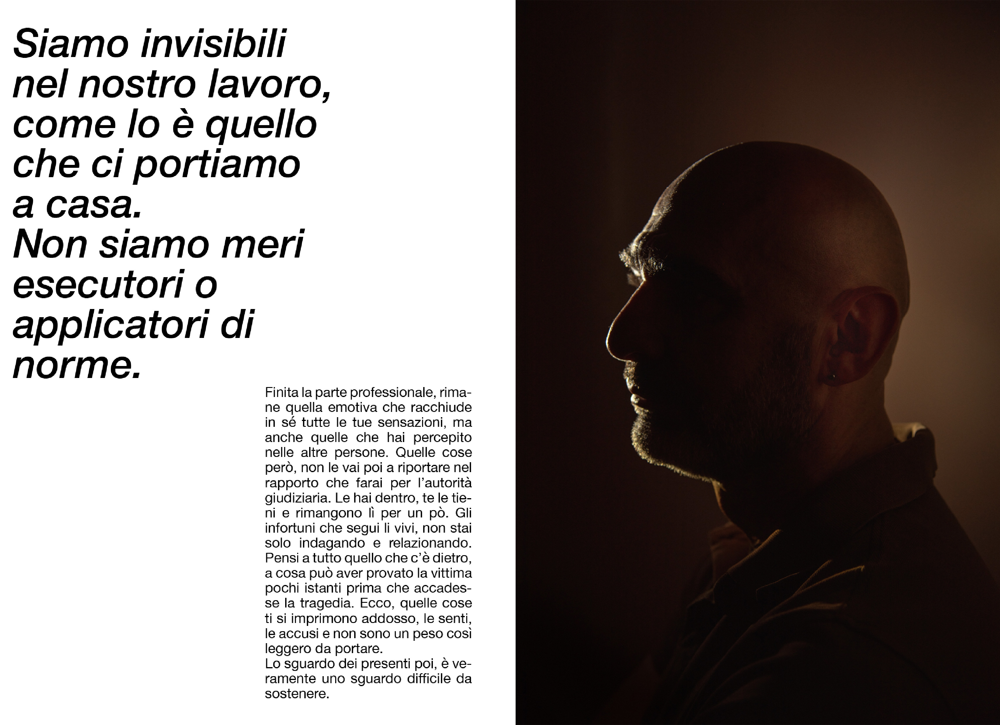

FATTORE UMANO
L’Italia detiene il primato a livello europeo come nazione col più alto tasso di mortalità e tra le prime in classifica sul numero di infortuni sul lavoro.
Nei primi undici mesi del 2024 sono state 1000 le vittime sul lavoro*.
Ogni giorno in media tre persone perdono la vita sul luogo di lavoro, il posto dove ognuno di noi trascorre almeno metà della propria vita, uno spazio che dovrebbe garantire - per diritto - la sicurezza e la salute.
«In un sistema di tutela della sicurezza e della salute che risulta ancora oggi inefficace, la vera
riforma in grado di cambiare la situazione italiana è quella culturale: è fondamentale che la
sicurezza sul lavoro diventi una vera priorità sociale. Sono necessarie azione sinergiche da parte
di tutti gli attori istituzionali, le parti sociali, il mondo produttivo e la società civile; per far sì che
tutte le morti avvenute sul lavoro non siano solo un incessante ripetersi o delle ferite che nessuno
riesce a suturare.»
Giulia Caruso - sociologa DORS
Ogni numero nasconde una storia: vite spezzate o sospese che svelano l’altro volto di una realtà
troppo a lungo ignorata.
Fattore Umano raccoglie le storie e le testimonianze di vittime e famiglie, ponendo l’attenzione
anche alle figure professionali che si occupano di prevenzione, salute e tutela. Attraverso un
lavoro che utilizza immagini ma anche testimonianze e testi, va a raccontare quello che è il
drammatico mondo delle morti e degli incidenti sul lavoro.
* dati Open Data INAIL
